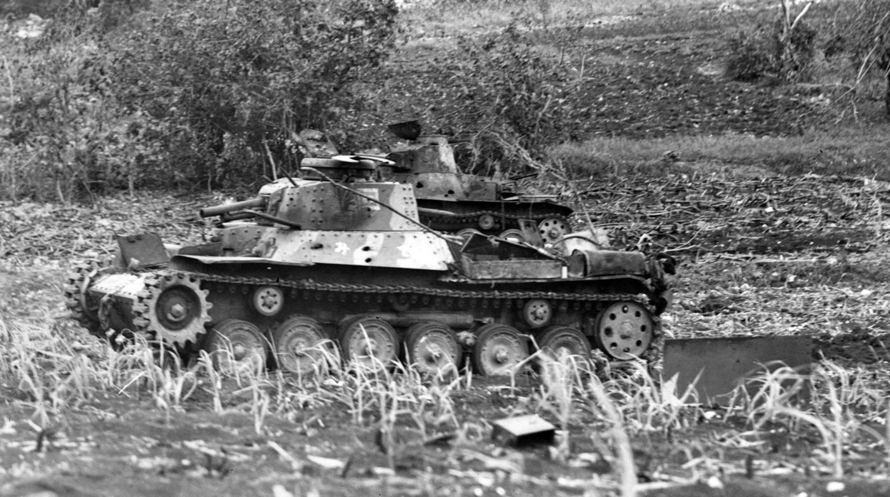

The Type 97 Chi-Ha was a Japanese medium tank introduced in 1938, serving as the backbone of the Imperial Japanese Army’s armored forces during World War II. It was designed as a successor to the Type 89 I-Go, offering better mobility, firepower, and protection for infantry support and offensive operations across Asia and the Pacific. Despite its limitations against late-war Allied armor, the Type 97 Chi-Ha was reliable, easy to produce, and versatile, forming the core of Japan’s tank forces and influencing later designs such as the Type 3 Chi-Nu.

- Characteristics:
- Type: Medium tank
- Weight: 15 tons
- Crew: 4
- Gun: 57mm
- Speed: 38 km/h